OMR Console
On-premises bubble-sheet exam processing — scan, verify, score, and export without leaving the exam desk.
The problem with vendor OMR
Exam processing must be fast, accurate, and under university control — without perpetual licensing or cloud exposure.
- ABBYY / vendor lock-in — recurring cost and dependency for a core academic operation
- Exam-day volume — ~100 sheets per batch must move quickly with a clear exception path
- Data residency — answer sheets and scores should stay on a university Windows PC, offline
One console. End to end.
OMR Console replaces the vendor stack with an Isra-owned Windows application beside a Canon scanner.
What success looks like
OMR Console at a glance
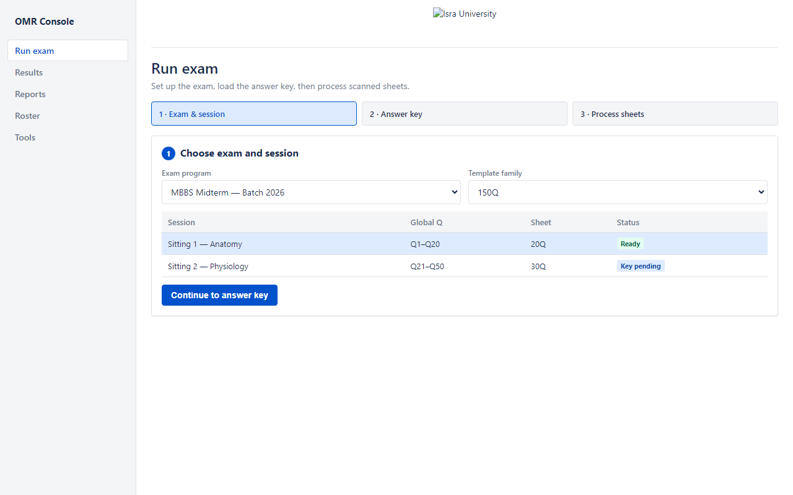
- Operator homeThree-step workflow: exam → key → process
- Isra brandedUniversity logo on every screen — white canvas, trust-first UI
- Desktop WindowsRuns as OMR.exe beside the scanner
Who uses it
Exam operators
Daily desk workflow: set up sittings, process stacks, clear the review queue, export scores.
Academic admins
Define exam programs, answer keys, subject splits, and student rosters.
QA / IT
Layout calibrator, Accuracy Lab, Canon dropzone setup, database backups.
Isra answer sheet families
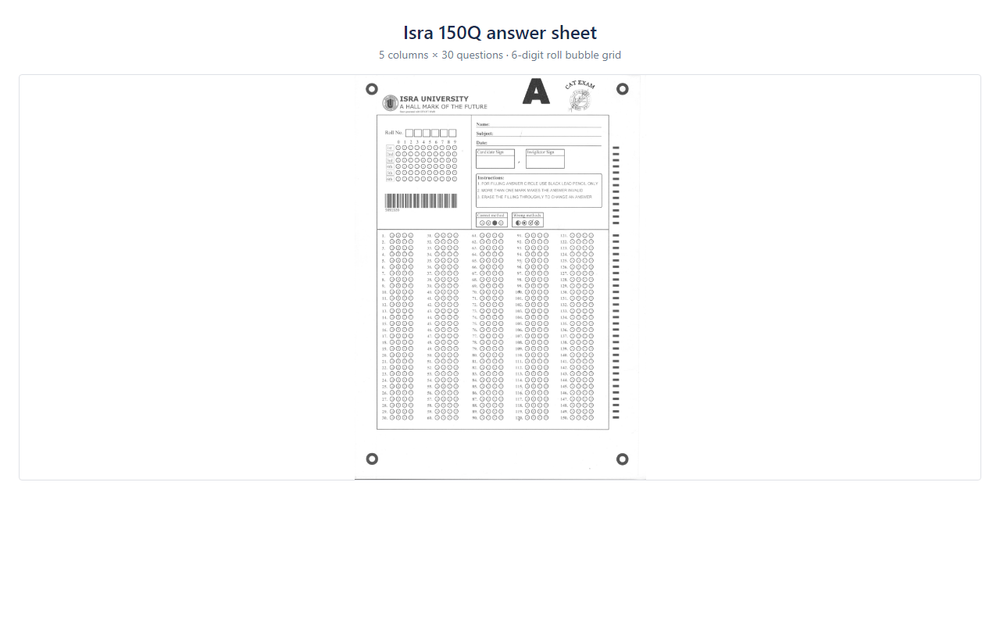
- 150Q family5 columns × 30 questions — primary template
- 60Q family4 × 15 layout for shorter sittings
- Roll number6-digit bubble grid only (barcode ignored)
- Multi-sittingGlobal Q numbering across sessions (e.g. Q1–20 then Q21–50)
Choose exam and session
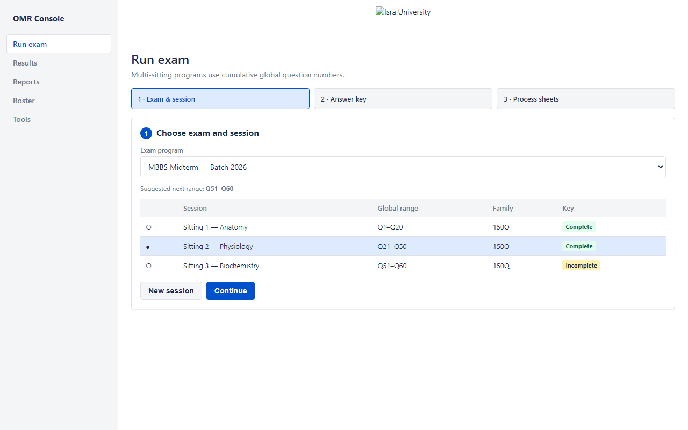
- Exam programsRecurring series with cumulative master keys
- SessionsEach sitting gets its own Q slice and path layout
- Why it mattersNo re-keying the entire paper for every weekly test
Load the answer key
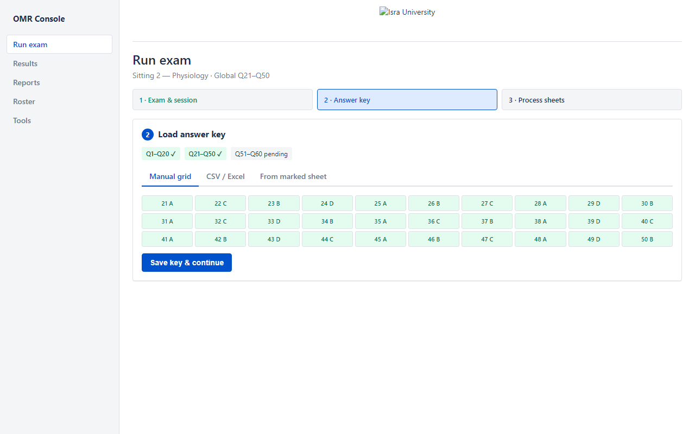
- Three ways inCSV/Excel · manual grid · marked sheet
- Coverage mapSee which global ranges are complete
- GuardrailProcessing blocked until the session slice is fully keyed
Process scanned sheets
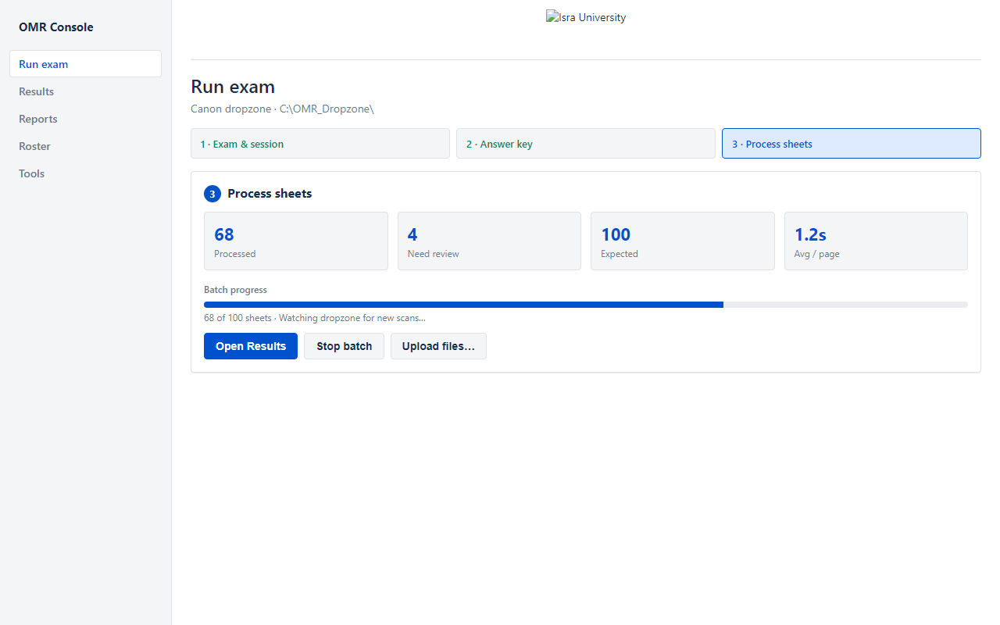
- DropzoneCanon scans land in C:\OMR_Dropzone\ and are picked up automatically
- Live progressProcessed count, review flags, average page time
- FallbackManual file upload when needed
Review exceptions, not every sheet
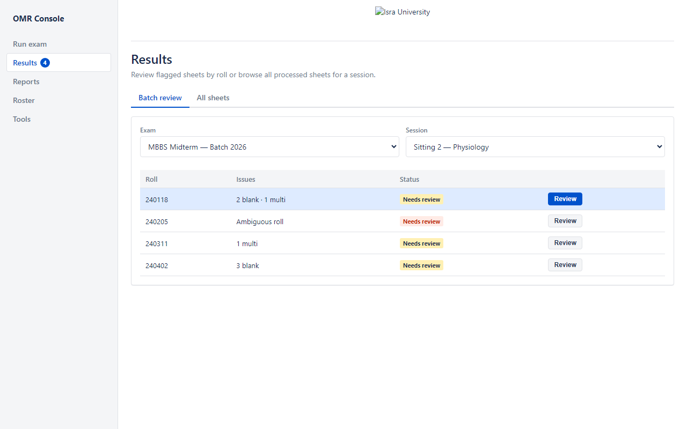
- Flagged onlyBlanks, multi-marks, ambiguous rolls
- Queue badgePending count stays visible in navigation
- Operator focusBatch review clears exceptions so scoring can finish
Confirm what the machine flagged
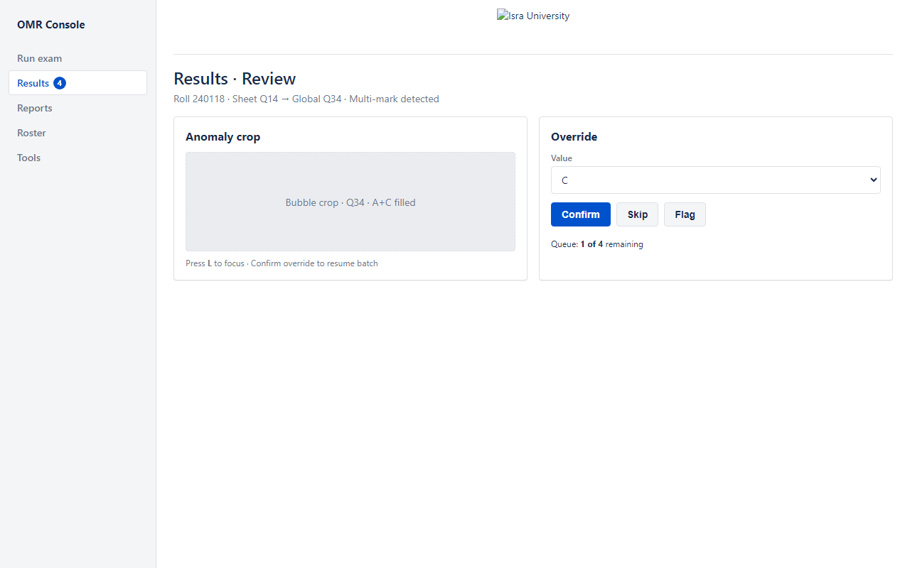
- Crop viewerSee the exact bubble region in question
- OverrideSet A/B/C/D or Blank · confirm, skip, or flag
- Sheet ↔ Global QOperators see both numbers during multi-sitting exams
Per-sheet question audit
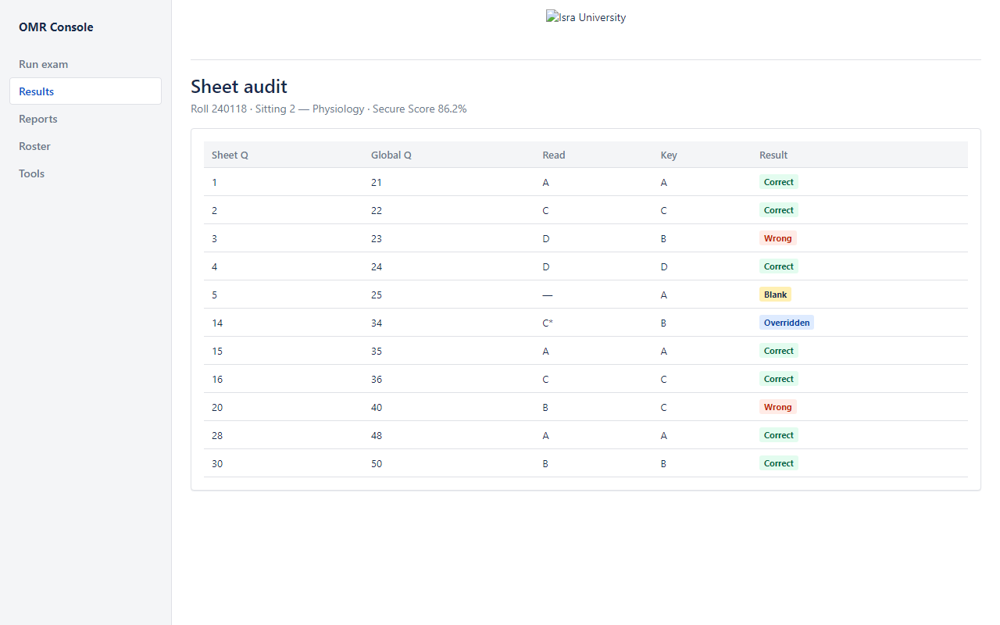
- Read vs keyEvery question comparable at a glance
- Overrides markedHuman decisions remain visible
- TrustSupports student queries and internal QA
Scores and operational export
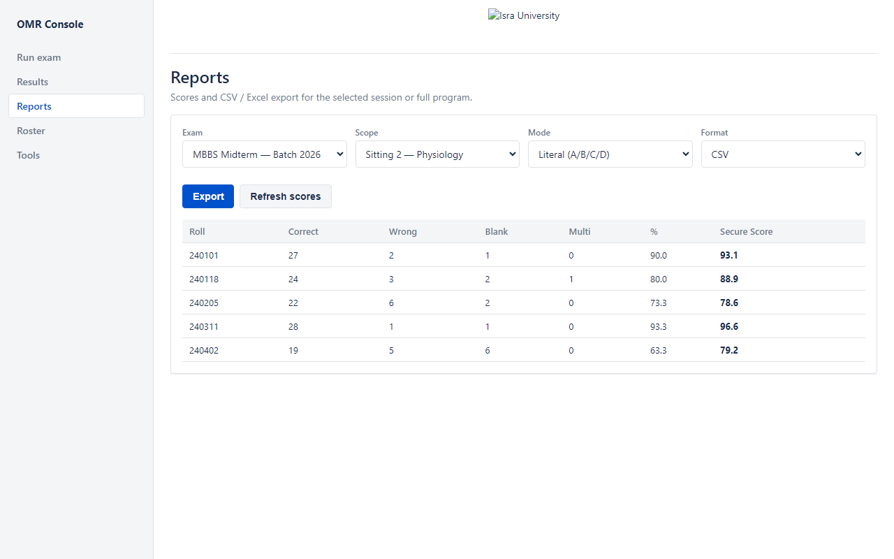
- Secure Score & %Side-by-side for fair comparison
- Export modesLiteral or binary · CSV or Excel
- ScopeOne session or cumulative program — this is core ops, not analytics
Student roster
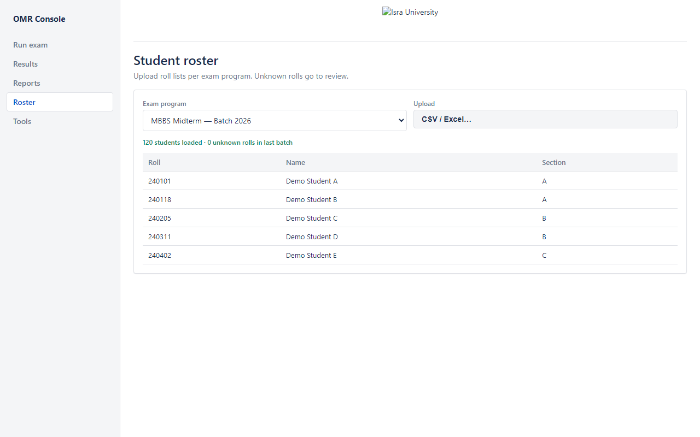
- CSV / Excel uploadRoll lists per exam program
- Unknown rollsSurfaced for review instead of silent mis-score
- SectionsSupports later academic grouping
Calibrator & Accuracy Lab
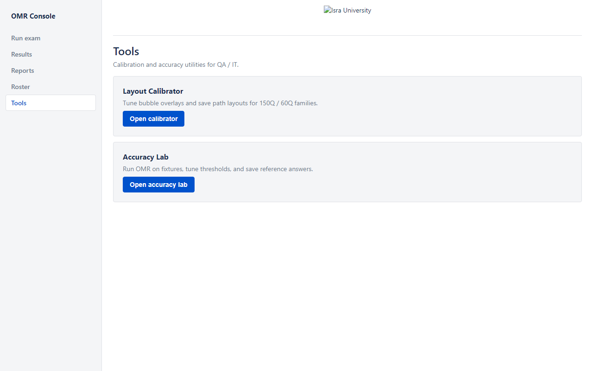
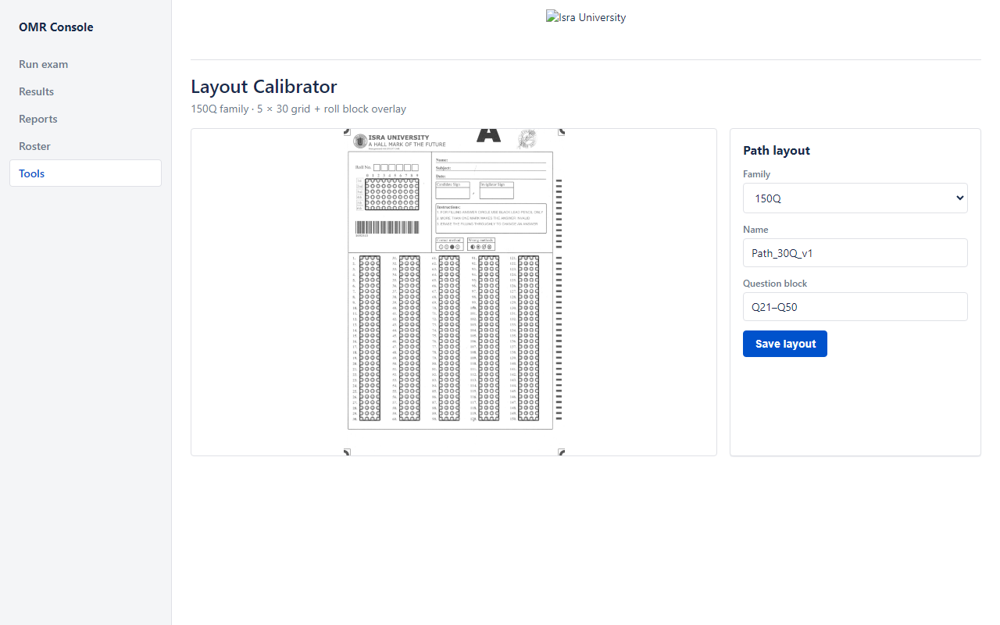
For QA and IT: tune bubble layouts and validate read accuracy on fixtures before exam day.
From image to answers
Align
Corner bullseyes → perspective warp so every sheet lines up
Roll
Decode the 6-digit bubble matrix
Bubbles
Measure A/B/C/D fill density with dynamic threshold
Flag
Blank and multi-mark anomalies go to human review
Data stays on campus
- Localhost only — UI and API bind to 127.0.0.1:8080
- SQLite on disk — exam data in a local database with backup scripts
- No cloud telemetry — designed for fully offline operation after install
- Audit trail — answer-key changes and overrides remain traceable
Hardware & deployment
Workstation
Windows PC next to the scanner · OMR.exe one-folder package
Scanner
Canon imageFORMULA DR-M140 → folder profile into the dropzone
Backup
Nightly omr.db backup · documented acceptance checklist
Built-in quality controls
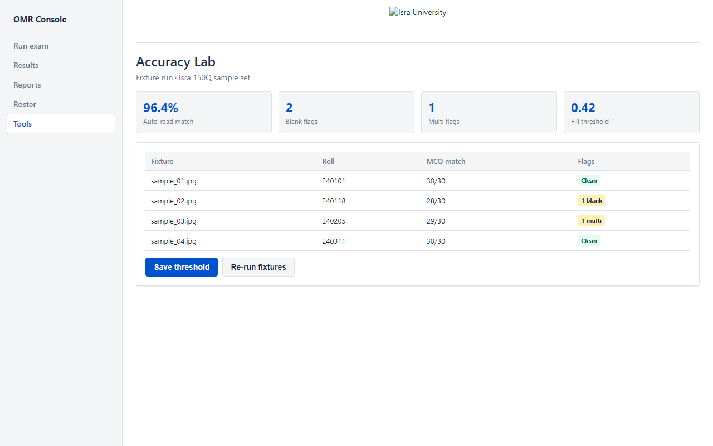
- Anomaly cropsOperators see the disputed region
- Verification queueNothing silent — flags must be cleared
- Accuracy LabFixture runs and threshold tuning before go-live
Result Analytics Dashboard
Core product gets you scored results. This add-on turns those results into academic insight — for faculty and the Academic Council, not the daily OMR operator.
- Ships after core go-live — does not block exam processing
- Uses data the OMR Console already produces
- Does not replace operational Reports (Secure Score / CSV export)
Per-question item analysis
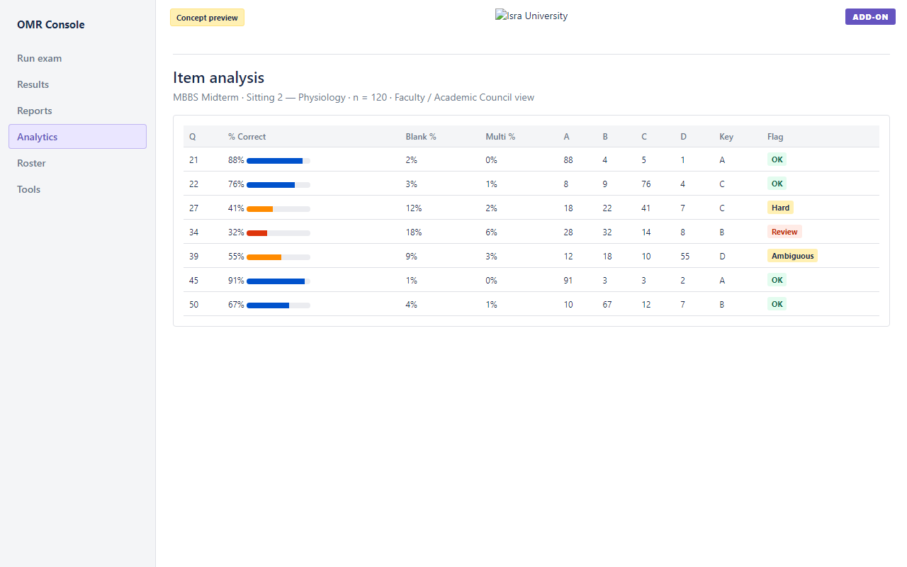
- Difficulty view% correct, blank rate, multi-mark rate per question
- DistractorsA/B/C/D distribution shows where students went
- Paper qualityFlag weak or ambiguous items before the next sitting
- PreviewConcept mockup — not required for go-live
Section & semester performance
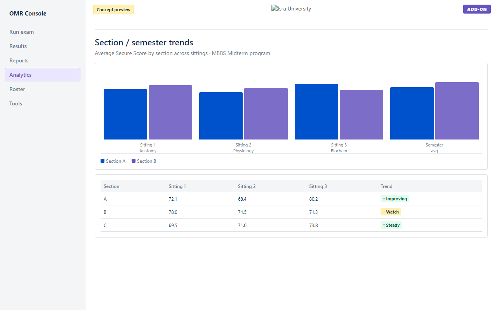
- Cohort trackingCompare sections across sittings
- Program viewSpot rising or falling subjects over a semester
- ActionableGives deans a signal beyond a single exam average
Faculty & council-ready reports
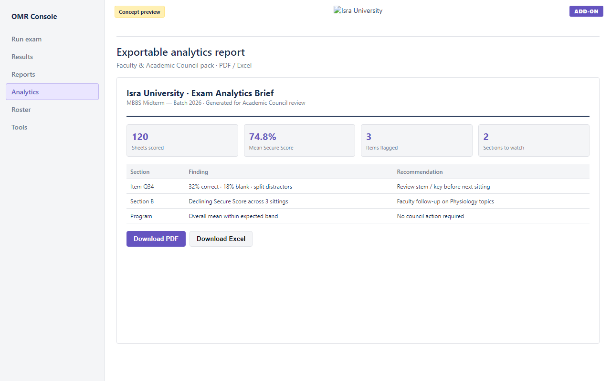
- Meeting packsPDF / Excel briefs with findings and recommendations
- AudienceFaculty review and Academic Council — not the scan desk
- Optional pilotCan follow core go-live when the university is ready
Five-minute path (core product)
- Open Run exam → select program & session
- Show answer key coverage for the sitting
- Drop 2–3 sample scans into the dropzone (or upload)
- Open Results → clear one flagged item
- Open Reports → show Secure Score and export
Roadmap
Core console
Run exam · verify · score · export · roster · offline Windows deploy
QA polish
Calibrator and Accuracy Lab continue to harden sheet families
Add-on (phased)
Result Analytics Dashboard — item analysis, trends, council exports
What we need from you
- Approve core OMR Console go-live for the exam workstation
- Schedule operator training (one sitting is enough to start)
- Confirm Canon DR-M140 dropzone profile on the target PC
- Optional: register interest / pilot for the Result Analytics add-on
Secure Score formula
Secure Score = correct ÷ (total − blank − multi) × 100
- Blanks and multi-marks do not count as wrong
- Percentage still available side-by-side for legacy comparison
- Negative marking is configurable per session when required
Core vs ABBYY (feature view)
| Capability | OMR Console | Typical vendor OMR |
|---|---|---|
| On-prem / offline | Yes | Varies / license |
| Isra sheet templates | 150Q / 60Q calibrated | Custom setup cost |
| Verification workflow | Built-in | Varies |
| Multi-sitting master key | Yes | Often manual |
| University-owned stack | Yes | Vendor lock-in |
| Analytics add-on | Optional phased | Separate products |
Analytics metrics (add-on)
- Item difficulty — % of students answering correctly
- Blank / multi rates — signal ambiguous stems or poor bubbling
- Distractor distribution — which wrong options attracted responses
- Section trend — mean Secure Score across sittings for a cohort